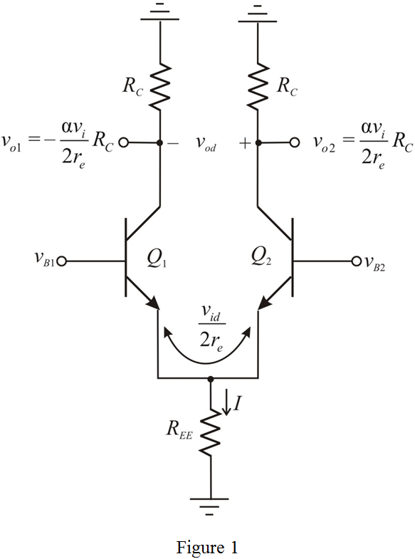
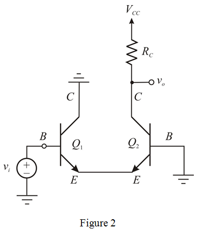
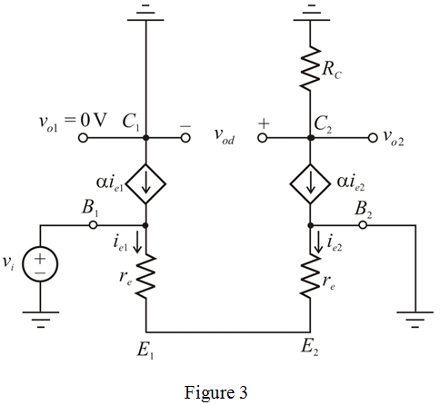

Calculate the emitter current of half circuit of differential amplifier.

The expression for small signal emitter resistance is,
The expression for the small signal emitter current is,
Calculate the expression for collector current.
Refer to Figure P8.61 in the textbook.
(a)
Draw the differential amplifier circuit with notations.

Calculate the emitter current of half circuit of differential amplifier.
The expression for small signal emitter resistance is,
The expression for the small signal emitter current is,
Calculate the expression for collector current.
Calculate the expression for output voltage.

Calculate the small signal voltage gain.
Therefore, the expression for small signal voltage gain of differential amplifier is .
As a cascade of a common-collector stage  and common-base stage
and common-base stage 
Draw the cascaded circuit diagram.

Draw the small signal equivalent circuit of Figure 2.

Apply Kirchhoff’s voltage law to bottom loop.
Apply Kirchhoff’s current law at node  .
.
Calculate the expression for output voltage.

Calculate the small signal voltage gain.
Therefore, the expression for small signal voltage gain of cascaded amplifier is .